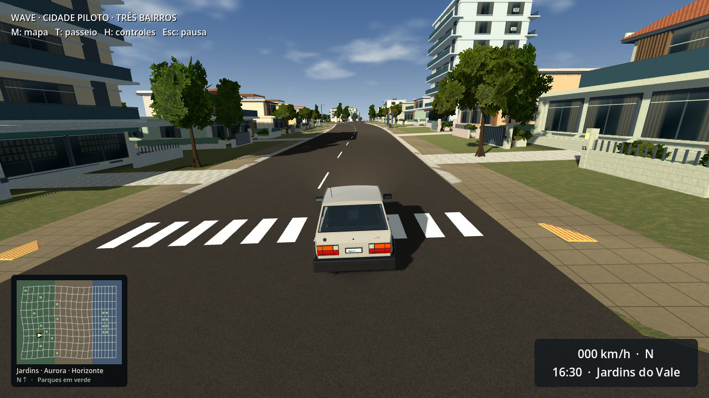
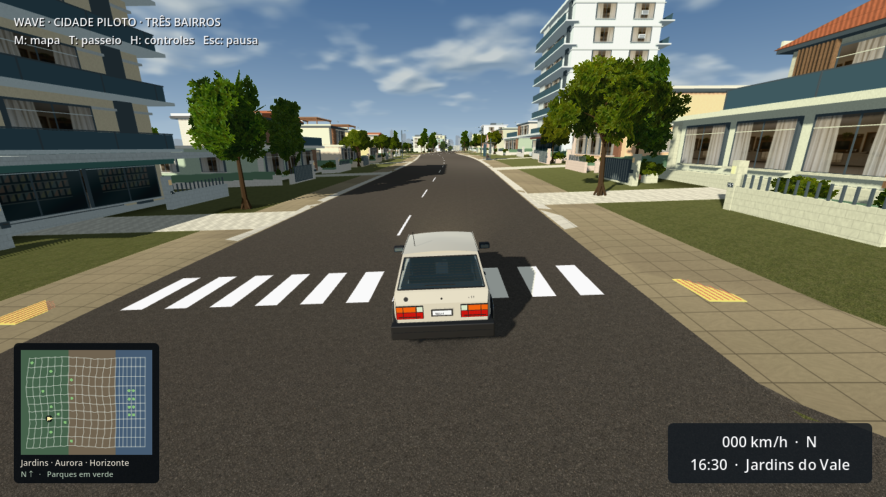

Acabamento de materiais, interiores de janelas, céu e iluminação, com uma nova representação da vegetação distante e carregamento preparado offline. Mesmos 200 quarteirões e colisões. Arraste para comparar.


DEPOISANTESEquilibrado · Intel HD 4400 · Compatibility · 1280×720. Imagens estáticas; não medem FPS.
O novo Equilibrado usa simplificação distante com maior alcance de detalhe; o anterior usava os modelos completos. Câmeras e horários são preservados, com seleção de proximidade acompanhando a câmera nas vistas de bairro da nova versão. As métricas acima são contagens estruturais, sem equivalência direta em FPS. A captura anterior terminou com sinal 143 após salvar todas as imagens; o encerramento não está sendo apresentado como validação bem-sucedida.